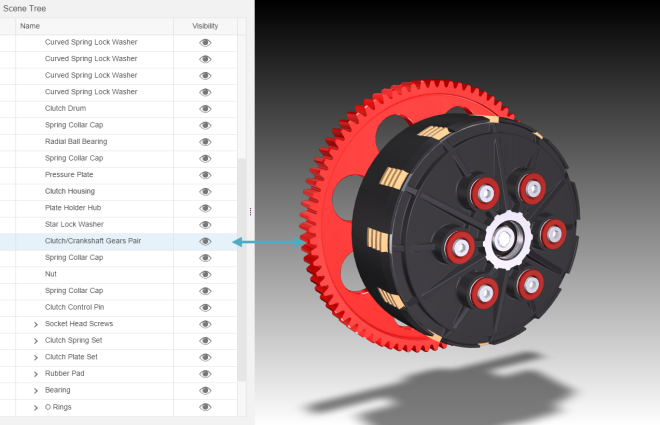
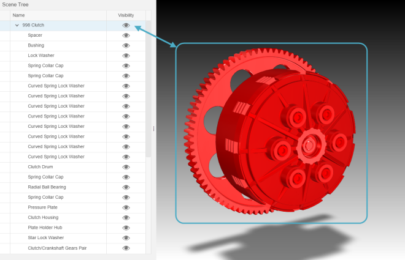
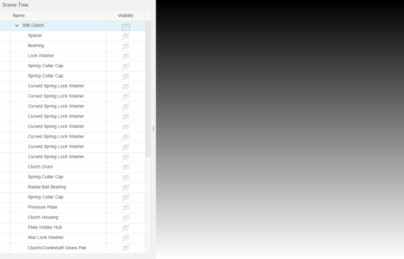

Scene Tree
The sap.ui.vk.SceneTree control presents a hierarchical view of the nodes in a given scene.
- sap.ui.vk.SceneTree in the API Reference in the Demo Kit
- Step 4 - Viewport with Scene Tree in the Demo Kit
The Scene Tree control (sap.ui.vk.SceneTree) presents a hierarchical view of all the nodes in a given scene.
- a ViewStateManager object, which handles the visibility and selection states of a scene
- a Scene object, so that the Scene Tree knows the nodes to display in the hierarchy
The Scene Tree displays the collection of nodes in a scene. You can add a Scene Tree to your application by using the sap.ui.vk.SceneTree control. The Scene Tree is also avaliable in the composite sap.ui.vk.Viewer control.
Before a scene's nodes can appear in the Scene Tree, you will need to set up two-way data binding between the Scene Tree and the Viewport in your application. Note that you can only bind to one Viewport instance at a time.
The following sections outline the Scene Tree's selection and visibility behavior in more detail.
Hiding or Viewing the Scene Tree
When using the sap.ui.vk.Viewer control, the Scene Tree is enabled by default, which means that a SceneTree instance is created. You can toggle the visibility of the Scene Tree using the Scene Tree button in the Toolbar.
The following table outlines what the Scene Tree button looks like in these different states:
| Scene Tree button state | Description |
|---|---|
 |
Scene Tree is shown (this is the default state). |
 |
Scene Tree is hidden. |
| Scene Tree is disabled, or, if a 2D file is loaded into the Viewer application. |
Selecting Nodes in the Scene Tree
By default, the Scene Tree is collapsed so that only the top-level nodes in the Scene are displayed.
You can expand the Scene Tree by clicking on the > icon next to a node to display that node's child nodes.

Selecting a node in the Scene Tree will highlight that node in the Viewport, and vice versa. If you select a node in the Viewport that is currently hidden in the Scene Tree, the Scene Tree will expand automatically to display the selected node in the Scene Tree's hierarchy.
Selecting a node in the Scene Tree that has child nodes will result in the node and its child nodes being selected in the Viewport.
Toggling Node Visibility in the Scene Tree
You can toggle between displaying or hiding a node from view in the Viewport by
clicking the 'eye' icon  next to a node in the Scene
Tree. The following example shows a comparison of two similar nodes, but with
one node being hidden from view.
next to a node in the Scene
Tree. The following example shows a comparison of two similar nodes, but with
one node being hidden from view.

If you toggle the visibility for a node that has child nodes, the visibility change will apply to the child nodes as well. The following example shows the root node being set to hidden, resulting in all of its child nodes being hidden as well.
